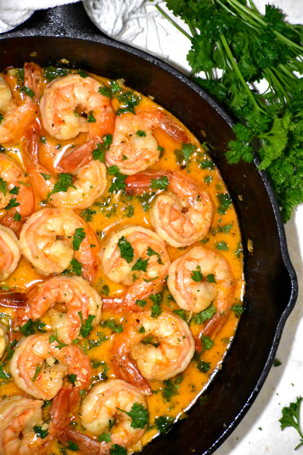

Cajun Shrimp Scampi

Description
Everybody loves their classic scampi, right? Fat, succulent shrimp
sautéed in rich buttery, garlicky, lemony sauce with a splash of
white wine, and topped with a sprinkling of parsley and parmesan.
It’s perfect in itself! We cook it all the time.
Ingredients
- 1 lb shrimp
- 4 garlic, chopped
- 4 Tbsp butter
- 2 Tbsp olive oil
- 1/4 cup white wine
- 1 Tbsp Cajun seasoning
- 1/4 cup heavy cream
- 1 lemon, juiced
- 1/2 cup chopped parsley
- Salt to taste
- Fresh ground pepper to taste
- Parmesan cheese for garnishing
Instructions
- Heat olive oil and 3 Tbsp butter in sauce pan over medium heat.
- Add garlic, sauté 30-60 seconds.
- Add white wine, reduce 2-3 minutes.
- Stir in shrimp and Cajun seasoning. Cook 3-5 minutes, depending
on size of shrimp. The shrimp should be almost fully cooked.
- Add remaining butter, lemon juice and cream. Stir and cook an
additional minute.
- Add salt and pepper to taste, as well as parsley.
- Serve hot over pasta or noodles